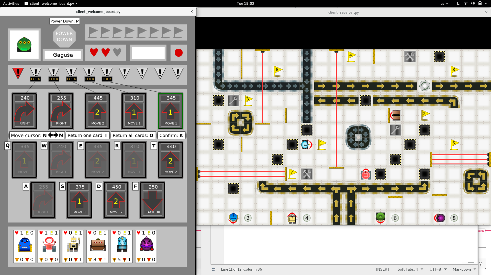

Poslední sraz
Nejnovější článek
Dnes se scházíme naposled. Čeká nás finální opravování zásadních chyb, které mohou ovlivnit aktuální hratelnost hry, chceme doladit nějaké drobnosti a především otestovat hru v maximálním možném počtu hráčů. Od minulého setkání prošla hra většími proměnami z hlediska grafiky a podařilo se vyřešit téměř všechno, co jsme si vytyčily pro …